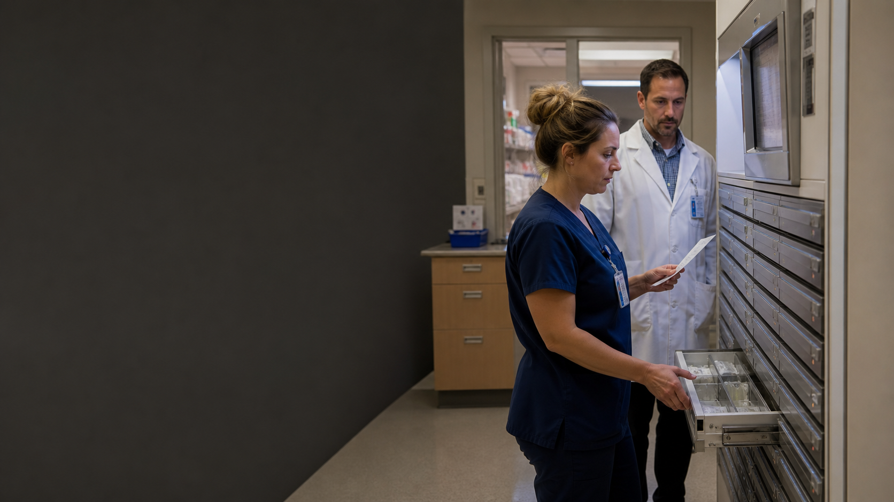
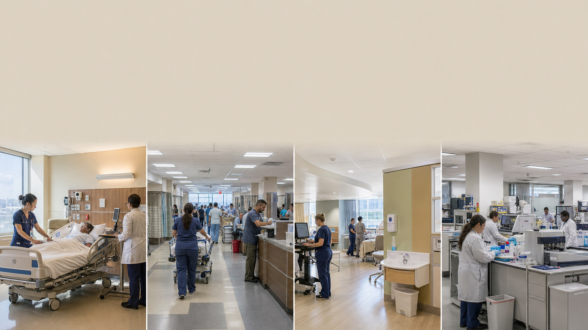
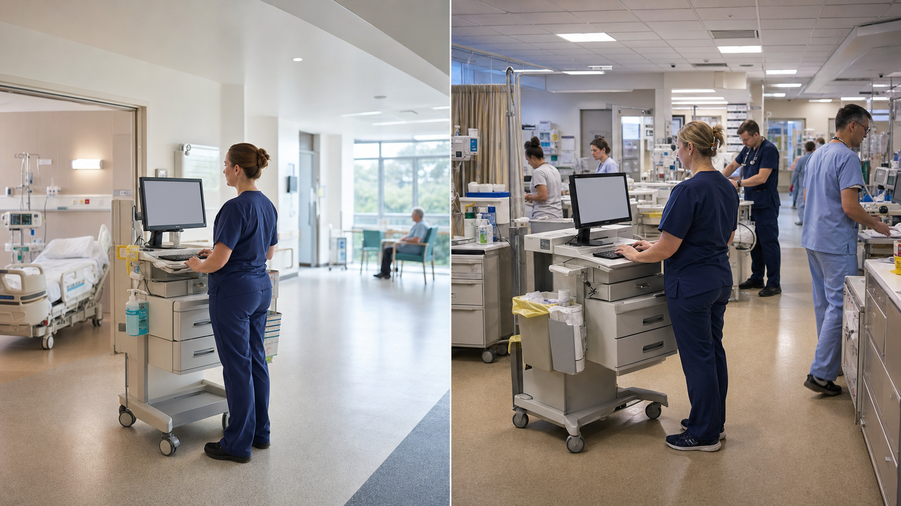

01Designed measurement
Ready · verified 19 July 2026
Pulse oximetry
A number is the output of skin, light, hardware, software, validation, conditions of use, interpretation, and action.
Contemporary module library · 2026
Short, reusable teaching modules built around one durable move: replace blame with a more accurate account of the conditions, controls, adaptations, and recovery that shape care.
Choose a teaching job
Each ten-slide arc includes evidence, an explicit limitation, a systems explanation, and one structured transfer activity. All eight passed the full acceptance run on 19 July 2026.
A number is the output of skin, light, hardware, software, validation, conditions of use, interpretation, and action.
The environment is not scenery. It changes observation, privacy, ownership, access to equipment, communication, and response.
Human performance varies predictably. Safe systems manage workload, circadian pressure, coverage, handoff, recovery, and reporting.

Detection and recoveryNurses detected a technical deployment failure. Resilience came from noticing, escalation, technical expertise, containment, and prepared recovery.
A Canadian medication-naming case shows how one field can change meaning as it moves through product, database, display, and action.
For some medicines, time is part of the dose. The regimen travels through people, records, service hours, technology, and place.

Designed implementationOne product family becomes local data, fitted models, thresholds, routing, ownership, workload, response, and monitoring.

Designed lifecycleSoftware safety is maintained after purchase through specification, configuration, realistic testing, use, change control, feedback, and shared learning.
Release evidence
Claim review, full-size projection inspection, interaction testing, image provenance, rights review, portability, and the four-lens editorial panel all passed. The records below make that decision auditable.